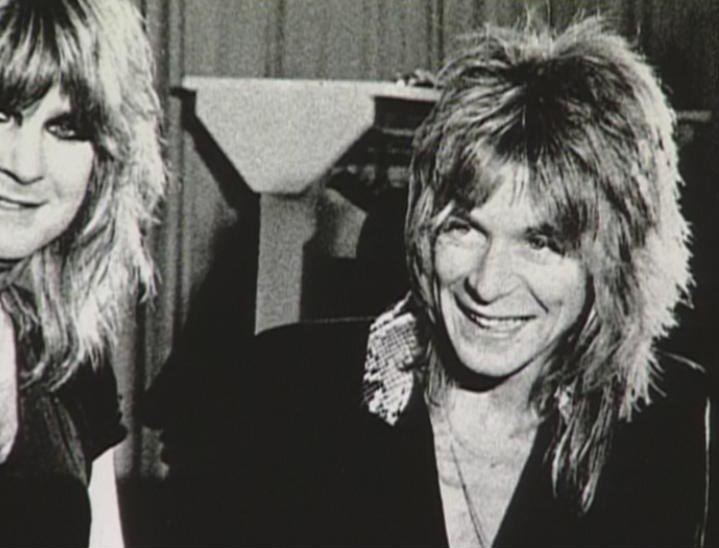
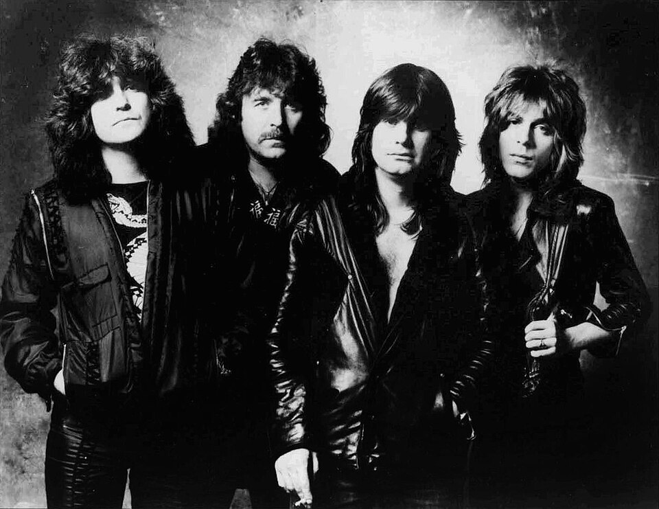

Randy Rhoads
From humble beginnings to greatness.
Driven by passion for his craft
He rose to fame, guitar in hand
Amplifiers echoing his melodies

Randy Rhoads was born on December 6, 1956, in Santa Monica, California. He was the youngest of three children in his household. Both of his parents were music teachers. Sadly, the household would change approximately 17 months after Randy’s birth when his father left to be with someone else, whom he would later marry. Rhoads was raised primarily by his mother. The environment she created in that house was filled with music. She would have everyone playing instruments together. Delores Rhoads wasn’t just his mother; she was also his early music teacher. She taught him to read music early in his life. By the time Randy was seven, he had picked up the guitar and started learning folk and classical guitar. Through those lessons, he began playing the electric guitar as well. With his undying dedication, he practiced and honed his craft. While building his skills, he actually surpassed one of his earlier teachers, who admitted that Randy had learned everything he could teach him. While Rhoads is known for his guitar work, his mother also helped him learn the piano so he could develop a deeper understanding of music theory and technique. As Randy continued growing and learning through the years, he and his brother would have fun in the family’s garage, imitating performances from their favorite bands like The Beatles and The Rolling Stones.
One day, when Rhoads was 14, he attended an Alice Cooper concert in 1971. After seeing the concert, he was in awe, and it cemented for him exactly what he wanted to do. He knew he could perform like the musicians he had witnessed on stage. From that point forward, he studied harder and connected with more local musicians. With those musicians, he started performing anywhere he could.
When Randy was 16, he wasn’t just a skilled guitarist; he was teaching guitar as well as fronting bands and getting himself out there among fellow young musicians. Rhoads would often teach at his mother’s music school and perform at night. He had even graduated from high school early through a special program. One of Randy’s earlier bands was called Little Women. Little did he know at the time that this band would become part of the group he would break out onto the scene with as Quiet Riot. He and Quiet Riot toured the Los Angeles club circuit until about 1976. That year, they finally got their record contract. During his time with them, he could often be found writing and shaping the band’s sound, always working to perfect things.
By the time 1979 rolled around, Ozzy Osbourne was looking for a guitarist, and Randy auditioned. Through the connections Randy had made over the years, a friend of his practically pushed him through the door just to get him to the audition. When he showed up, he had a Gibson and a small practice amp. After hearing a simple warm-up exercise, Ozzy hired him. However, Randy had to audition again once Ozzy had sobered up so he could hear him properly. Afterwards, Randy played with Ozzy and the other musicians to make sure everything felt right. Not long afterward, they got to work on Ozzy’s new projects. While their time together wasn’t long, they created two albums together.
Sadly, in 1982, Randy passed away in a tragic plane crash. Considering he was only 25 years old at the time, looking at his life, he had accomplished what he loved most: creating music, enjoying time with his friends and family, learning whatever came his way, and playing those loud, distorted rhythms and melodic solos. From playing in the living room with his family to rocking arenas while playing searing leads, he lived a life and loved every moment he could.

Explore the stories behind the music. Discover the legends who reshaped our musical landscape.